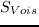

Next: . Up: L'ensemble 'Nombre d'actifs limité' Previous: le choix des positions
Définissons maintenant la notion de n-uplet en interaction par la donnée de n positions avec
 et d'un seuil  tels que pour toute paire de positions (P,Q) du n-uplet, P et Q sont en interaction.
tels que pour toute paire de positions (P,Q) du n-uplet, P et Q sont en interaction.